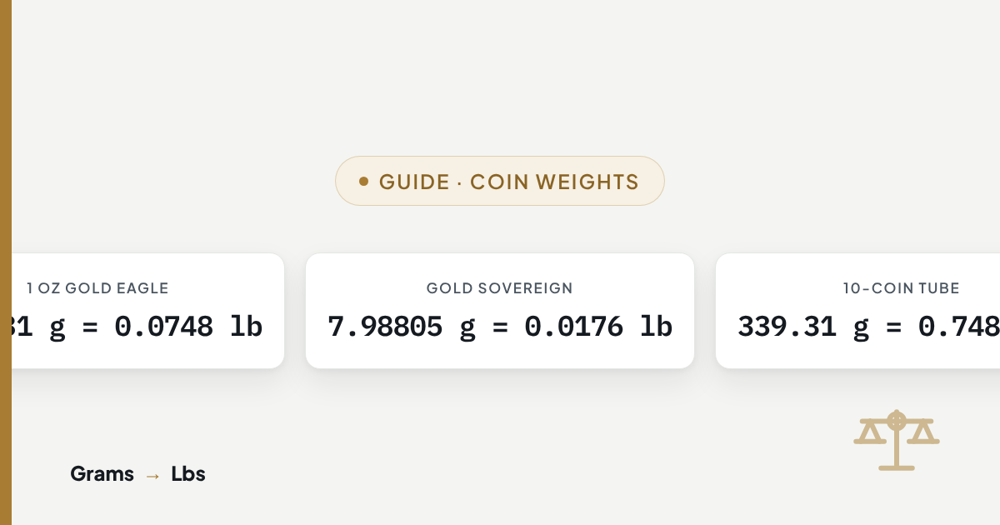

Bullion & Vintage Coin Weight Standards: Grams to Pounds
Mints specify a coin’s weight in grams or troy ounces, not pounds. Here is the official minted weight standard for the most commonly looked-up bullion and vintage coins, converted to pounds.

Mints publish a coin's weight in grams or troy ounces, never in pounds, because that is the unit the minting law and the specification sheet are written in. Converting one of those official figures to pounds takes one division by 453.59237, the exact number of grams in an avoirdupois pound — the charts below apply that to the named bullion and vintage coins collectors look up most, using each mint's own stated gross weight rather than a dealer's rounded figure.
The quick answer
A single one-ounce bullion coin weighs well under a tenth of a pound: a 33.931 gram American Gold Eagle is 0.0748 pounds, and a 31.103 gram American Silver Eagle is 0.0686 pounds. A British gold sovereign, which was never struck to a full troy ounce standard, is lighter still at 7.98805 grams, or 0.0176 pounds. The figures below come from each coin's official minted weight, converted through grams to avoirdupois pounds.
Modern gold bullion coin weights in pounds
A one-ounce American Gold Eagle weighs 33.931 grams as minted, which is 0.0748 pounds, because the US Mint alloys the coin with silver and copper to reach a full troy ounce of pure gold inside a heavier, more durable coin. That same gross-versus-pure distinction applies across every 22-karat gold bullion coin below; coins struck in .9999 fine gold, like the Canadian Maple Leaf, carry almost no alloy, so their gross weight sits much closer to one troy ounce of metal.
| Coin | Fineness | Gross weight (g) | Pounds (lb) |
|---|---|---|---|
| American Gold Eagle | .9167 (22k) | 33.931 g | 0.0748 lb |
| Krugerrand | .9167 (22k) | 33.93 g | 0.0748 lb |
| Canadian Gold Maple Leaf | .9999 | 31.103 g | 0.0686 lb |
| Austrian Gold Philharmonic | .9999 | 31.103 g | 0.0686 lb |
| Gold Britannia (2013–present) | .9999 | 31.10 g | 0.0686 lb |
| Chinese Gold Panda | .999 | 30 g | 0.0661 lb |
Notice the Gold Panda is the outlier: since 2016, the China Gold Coin Corporation has struck the Panda to a flat 30 grams rather than a troy ounce, so it weighs 0.0661 pounds, slightly less than the troy-ounce coins above. Everything else in the table is specified to one troy ounce of metal (31.1034768 g) and then adjusted upward for alloy where the coin isn't struck in nearly pure gold.
Modern silver bullion coin weights in pounds
A one-ounce American Silver Eagle weighs 31.103 grams, or 0.0686 pounds, the same troy-ounce-to-gram figure used for any coin struck to a nearly pure one-troy-ounce standard. The US Mint's own statute (31 U.S.C. § 5112(e)) sets the Silver Eagle at 31.103 grams of .999 fine silver, and the Royal Canadian Mint specifies its Silver Maple Leaf the same way, at .9999 fine:
| Coin | Fineness | Gross weight (g) | Pounds (lb) |
|---|---|---|---|
| American Silver Eagle | .999 | 31.103 g | 0.0686 lb |
| Canadian Silver Maple Leaf | .9999 | 31.103 g | 0.0686 lb |
Because silver coins are struck close to pure metal, their gross weight and their troy-ounce content are nearly identical — unlike the 22-karat gold coins above, where the gross weight is noticeably heavier than the metal content alone.
Vintage pre-1933 US gold coin weights in pounds
A $20 Saint-Gaudens or Liberty Head double eagle, minted before the US left the gold coin standard in 1933, weighs 33.436 grams as struck, which is 0.0737 pounds. These vintage denominations were minted in .900 fine gold (90% gold, 10% copper), a different alloy ratio from any modern bullion coin above, and each denomination has its own fixed gross weight set by the Coinage Act specifications of the era:
| Denomination | Gross weight (g) | Troy oz | Pounds (lb) |
|---|---|---|---|
| $20 double eagle (Liberty Head / Saint-Gaudens) | 33.436 g | 1.075 troy oz | 0.0737 lb |
| $10 eagle (Liberty Head / Indian Head) | 16.718 g | 0.5375 troy oz | 0.0369 lb |
| $5 half eagle (Liberty Head / Indian Head) | 8.359 g | 0.2687 troy oz | 0.0184 lb |
Each vintage denomination's gross weight scales linearly with its face value: the $10 eagle weighs exactly half of the $20 double eagle, and the $5 half eagle weighs exactly a quarter of it, because all three were struck to the same .900 fine standard from the same era's Coinage Act specifications.
The British gold sovereign's weight in pounds
A British gold sovereign weighs 7.98805 grams as minted, which is 0.0176 pounds, far lighter than any one-troy-ounce bullion coin because the sovereign was never struck to a troy ounce standard in the first place. The Royal Mint has held this weight, along with a 22-carat (.9167) fineness, as the sovereign's standard specification since 1817, and it hasn't changed for the modern sovereign since.
The Royal Mint also strikes the sovereign in smaller and larger fractional sizes, each scaled proportionally from the same 7.98805 gram standard:
| Denomination | Gross weight (g) | Pounds (lb) |
|---|---|---|
| Half sovereign | 3.994 g | 0.0088 lb |
| Sovereign | 7.98805 g | 0.0176 lb |
| Double sovereign | 15.9761 g | 0.0352 lb |
| Quintuple sovereign ("five pounds") | 39.9403 g | 0.0881 lb |
The quintuple sovereign, despite its "five pounds" face-value name, still weighs less than a tenth of an actual avoirdupois pound — a reminder that a coin's currency denomination and its physical weight in pounds are two unrelated numbers that happen to share the word "pound."
Converting a tube or box of coins to pounds
To find the pound weight of several identical coins, multiply one coin's official gram weight by the coin count, then divide the result by 453.59237. Mints and dealers package bullion coins in standard tube and box counts, so the same two-step math applies whether the count is 10, 20, or 500:
10-coin tube of American Gold Eagles (1 oz each):
33.931 × 10 = 339.31 g
339.31 ÷ 453.59237 = 0.7481 lb
result → 0 lb 11.97 oz
33.931 × 10 = 339.31 g
339.31 ÷ 453.59237 = 0.7481 lb
result → 0 lb 11.97 oz
20-coin tube of American Silver Eagles (1 oz each):
31.103 × 20 = 622.06 g
622.06 ÷ 453.59237 = 1.3714 lb
result → 1 lb 5.94 oz
31.103 × 20 = 622.06 g
622.06 ÷ 453.59237 = 1.3714 lb
result → 1 lb 5.94 oz
500-coin "monster box" of American Silver Eagles:
31.103 × 500 = 15,551.5 g
15,551.5 ÷ 453.59237 = 34.2852 lb
result → 34 lb 4.56 oz
31.103 × 500 = 15,551.5 g
15,551.5 ÷ 453.59237 = 34.2852 lb
result → 34 lb 4.56 oz
The same multiply-then-divide method works for any coin and any count — a 25-coin tube of Krugerrands (33.93 g each) comes to 848.25 grams, or 1.8701 pounds, using the exact same two steps. The converter performs the division step instantly for any gram total, at 2, 4, or 6 decimal places.
Minting tolerance: why a real coin can vary slightly
A real coin's actual weight on a scale can differ from its official specification by a small, legally defined margin called minting tolerance, not an error. US bullion coin law (31 U.S.C. § 5112) sets the gram figures above as the legal standard weight, but allows a fractional-gram variance in either direction during striking, since no mechanical process produces every coin at the exact same mass down to the milligram.
This tolerance is normal manufacturing variance, not a sign a coin is underweight or counterfeit, though a coin that falls noticeably outside its mint's published tolerance range is worth re-checking against that specification. The gram figures throughout this guide are each mint's stated standard weight — the number stamped into law or listed on the mint's own specification page, not a weight read off any individual coin.
Frequently asked questions
How much does a one-ounce gold bullion coin weigh in pounds?
A one-ounce gold bullion coin weighs roughly 0.07 to 0.075 pounds, depending on its alloy. A 33.931 gram American Gold Eagle (22 karat) is 0.0748 pounds, while a 31.103 gram Canadian Gold Maple Leaf (.9999 fine, almost no alloy) is slightly lighter at 0.0686 pounds. Both coins contain one troy ounce of pure gold; the difference is the extra copper and silver alloy in the 22-karat coins.
What is the weight of a British gold sovereign in pounds?
A British gold sovereign weighs 7.98805 grams, which is 0.0176 pounds. The Royal Mint has held this as the sovereign’s standard weight, at 22-carat (.9167) fineness, since 1817. A sovereign is much lighter than a one-troy-ounce bullion coin because it was never struck to that standard in the first place.
Why do gold bullion coins weigh more than exactly one troy ounce?
Most "one ounce" gold bullion coins weigh more than 31.1034768 grams (one troy ounce) because the "one ounce" refers to the pure gold content, not the coin’s total mass. A 22-karat coin like the American Gold Eagle or Krugerrand is alloyed with copper and silver for durability, which adds weight: the gold content stays at one troy ounce, but the gross coin comes to 33.93–33.931 grams. Coins struck in .9999 fine gold, like the Canadian Maple Leaf, have almost no added alloy, so their gross weight sits much closer to the pure one-troy-ounce figure.
How much does a Krugerrand weigh?
A standard one-ounce Krugerrand weighs 33.93 grams, which is 0.0748 pounds. Like the American Gold Eagle, it is struck in 22-karat (.9167 fine) gold, so its gross weight is higher than the 31.1034768 grams of pure gold it actually contains.
How much does an American Silver Eagle weigh in grams and pounds?
An American Silver Eagle weighs 31.103 grams by federal statute (31 U.S.C. § 5112(e)), which is 0.0686 pounds. It is struck in .999 fine silver, close enough to pure that its gross weight and its troy-ounce silver content are effectively the same number.
Can a coin’s actual weight differ from its official specification?
Yes, by a small, legally allowed margin called minting tolerance. Mints specify both a standard weight and a permitted variance, since no striking process produces every coin at an identical mass. A coin a fraction of a gram off its stated specification is normal manufacturing variance; one noticeably outside that tolerance is worth re-checking against the mint’s own published figures.
Sources
- US Mint, American Eagle Gold & Silver Bullion Coin specifications — 31 U.S.C. § 5112(a)(7)–(9) and § 5112(e)
- Royal Mint, Sovereign weight and purity specification — 22 carat (.9167 fine), 7.98805 g standard
- NIST Handbook 44, Appendix C — defines the troy ounce as exactly 31.1034768 g
- International Yard and Pound Agreement, 1959 — defines the international avoirdupois pound as exactly 453.59237 g